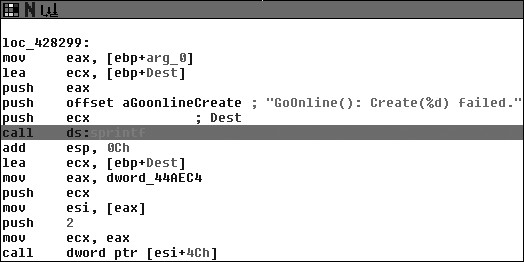

11.3 脚本例子
我们先创建一些在逆向时候会经常用到的脚本。之后，大家可以在此基础上扩展它们，进一步完成功能更强大，针对性更强的脚步。接下来的脚本将展示如何收集危险函数的调用 信息，以及用 IDA 的 debugger hook 监视函数的代码覆盖率，还有所有函数的栈的大小。
11.3.1 收集危险函数的调用信息
当一个开发者在寻找软件漏洞 bug 的时候，首先会找一些常用的而且容易被错误使用的 函数。比如危险的字符串拷贝函数 (strcpy, sprintf)，内存拷贝函数(memcpy)等。在我们审核 程序的时候，需要很简单的就找出这些函数。下面的脚本，将跟踪这些危险的函数，找出调 用它们的地方，之后在这些地方的背景色设置成不同的颜色，我们在 IDA 窗口中就能很方 便的看出来。
#cross_ref.py
from idaapi import *
danger_funcs = ["strcpy","sprintf","strncpy"]
for func in danger_funcs:
addr = LocByName( func )
if addr != BADADDR:
# Grab the cross-references to this address
cross_refs = CodeRefsTo( addr, 0 )
print "Cross References to %s" % func
print "-------------------------------"
for ref in cross_refs:
print "%08x" % ref
# Color the call RED
SetColor( ref, CIC_ITEM, 0x0000ff)
我们先获得危险函数的地址，然后测试这些地址的有效性。接着获得这些函数的交叉引用信息，确认什么地方调用了它们，最后把它们打印出来，并在 IDA 中给它们上色。用之 前编译好的 war-ftpd.exe 做测试目标，将看到如下的输出:
Cross References to sprintf
-------------------------------
004043df
00404408
004044f9
00404810
00404851
00404896
004052cc
0040560d
0040565e
004057bd
004058d7
...
Listing 11-1: cross_ref.py 的输出
上面这些被列出来的地址都是 sprintf 被调用的地方，如果在 IDA 中浏览这些地方 会看到它们都被上了色，如图 11-3。

Figure 11-3: sprintf 调用通过 cross_ref.py 上色之后
11.3.2 函数覆盖率
在执行动态分析的时候，明白我们真正进行的操作是由什么代码执行的，非常重要。无论是测试网络程序发送一个数据包，还是使用文档阅读器代开一份文档，代码覆盖率都能帮 我们很好的了解，程序做了什么。下面，我们将用 IDAPython 获取目标程序的所有函数， 并且在再每个函数的开始处都设置好断点。之后运行 IDA 调试器，debugger hook 会把每一 次断点触发的情况通知我们。
#func_coverage.py
from idaapi import *
class FuncCoverage(DBG_Hooks):
# Our breakpoint handler
def dbg_bpt(self, tid, ea):
print "[*] Hit: 0x%08x" % ea
return
# Add our function coverage debugger hook
debugger = FuncCoverage()
debugger.hook()
current_addr = ScreenEA()
# Find all functions and add breakpoints
for function in Functions(SegStart( current_addr ), SegEnd( current_addr )):
AddBpt( function )
SetBptAttr( function, BPTATTR_FLAGS, 0x0 )
num_breakpoints = GetBptQty()
print "[*] Set %d breakpoints." % num_breakpoints
第一步安装 debugger hook ，调试事件发生的时候就会调用它。接着循环获取所有函数 的地址，在每个地址上设置断点。SetBptAttr 告诉调试器，遇到断点后，不用停下来，继续 执行；如果没有这样做，那我们就得手工恢复调试器了，不累死也得烦死。最后一部就是打 印出所有断点的数量。当一个断点被触发的时候， debugger hook 里的断点处理函数就会打 印出当前的地址，这个地址由变量 ea 提供，它引用当前 EIP 寄存器的值。现在运行调试器（热键 F9），你将清楚的看到什么函数被执行了，以及它们执行的顺序。
11.3.3 计算栈大小
有时当我们对一个程序进行漏洞评估的时候，了解函数调用的栈的大小是很重要的。我们必须明确的知道，传递给函数的是一个指针还是申请好的栈缓冲区，如果是后者，我们就 会很感兴趣,能传递多少数据给它,要知道溢出可是个精活，空间太小了尽管有漏洞也很难利 用。下面我们用一段简短的代码完成这项任务：枚举程序中所有的函数，然后收集这些函数的栈信息，如果栈缓冲区大小符合我们的要求，就打印出来。将这些和前面的脚本合并起来， 我们就能在调试程序的时候，很好的跟踪调试感兴趣的函数 。
#stack_calc.py
from idaapi import *
var_size_threshold = 16 current_address = ScreenEA()
for function in Functions(SegStart(current_address), SegEnd(current_address) ):
stack_frame = GetFrame( function )
frame_counter = 0
prev_count = -1
frame_size = GetStrucSize( stack_frame )
while frame_counter < frame_size:
stack_var = GetMemberName( stack_frame, frame_counter )
if stack_var != "":
if prev_count != -1:
distance = frame_counter - prev_distance
if distance >= var_size_threshold:
print "[*] Function: %s -> Stack Variable: %s (%d bytes)" % ( GetFunctionName(function), prev_member, distance )
else:
prev_count = frame_counter
prev_member = stack_var
try:
frame_counter = frame_counter + GetMemberSize(stack_frame, frame_counter)
except:
frame_counter += 1
else:
frame_counter += 1
我们设置了一个阈值，用来衡量一个栈变量的大小是不适合我们的需求；这里设置成 16 个字节，不过大家也可以实验下各种不同的大小看看得出的结果。首先，循环获取所有 的函数，得到每个函数的栈框架对象。调用 GetStrucSize 计算出栈框架的大小。接着循环 获取栈中的变量。如果找到变量，就将当前变量的位置减去前一个变量的位置。然后通过之 间的差值计算出变量占据的空间大小。如果大小够大，就打印出来，如果不够大，就尝试计 算当前变量的大小，然后加上当前的位置，得到下一个变量的位置。如果无法确认变量的大 小，就在当前的位置简单的加一个字节，移动到下一个位置，然后继续循环。在脚本运行后， 我们就能看看难道类似如下的输出。
[*] Function: sub_1245 -> Stack Variable: var_C(1024 bytes)
[*] Function: sub_149c -> Stack Variable: Mdl (24 bytes)
[*] Function: sub_a9aa -> Stack Variable: var_14 (36 bytes)
Listing 11-2: stack_calc.py 的输出
现在我们有了 IDAPython 的基础知识，同时也动手实现了几个很容易扩展的脚本。这 些小小的脚本，将帮我们节省非常多的时间，在逆向工程中，最事件就是一切。下一章让我 们看一看 IDAPython 的实际应用：PyEmu，一个基于 Python 的 x86 仿真器。